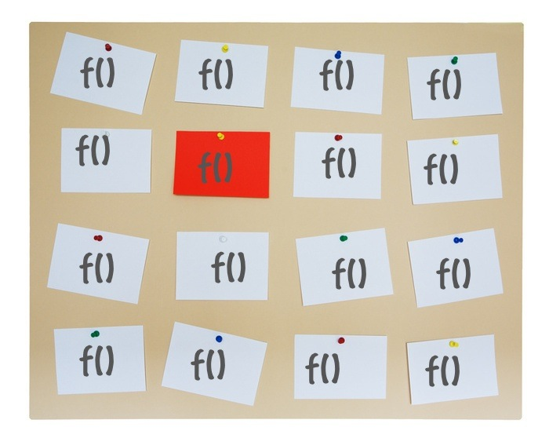

Introduction to Node.js
Installation
If you haven't already, you should install the latest stable version of Node.js in your computer.
For this head out to http://nodejs.org and click on the "Downloads" button.
Choose your platform, which will launch an install wizard.
Or download the source code and install it doing:
$ tar xvfz node-v0.8.12.tar.gz
$ cd node-v0.8.12
$ ./configure
$ make && make installYou will need some build essentials, or if you're in MacOS X, you'll need to have XCode installed.
After the installation is done, open a terminal window and on the shell prompt, type:
$ node
> _You should now get the Node REPL (Read-Eval-Print-Loop), prompting you for a JavaScript line.
Go ahead and type:
> console.log('Hello World!')
Hello World!A Hello World Server
Here is the cannonical hello world HTTP Server written in Node:
var http = require('http');
var server = http.createServer();
function handleRequest(req, res) {
res.writeHead(200, { 'content-type': 'text/plain'});
res.write('Hello World!');
res.end();
}
server.on('request', handleRequest);
server.listen(8080);Here we're importing the built-in module named "http" and assigning it to a variable named http. Then we're creating an HTTP Server.
After this we're creating a function that will be called every time a request comes in. This function writes some headers, spits out the string "Hello World" and then ends the request.
Next, we're registering this handleRequest function as an event listener for the request event on the server. This means that every time there is a request, the server will emit the request event and our function, being a listener for that event type, gets called.
Then, we're instructing the server to listen on port 8080 and our script ends.
Test server
This code is a bit verbose. I did that to be able to explain you clearly each part, but we can compact this into:
require('http').createServer(function handleRequest(req, res) {
res.writeHead(200, { 'content-type': 'text/plain'});
res.end('Hello World!');
}).listen(8080);Here we're doing the following savings:
- We're getting rid of the
httpvariable, since we only use the module object to create the server. - We're passing the
handleRequestfunction as an argument to thecreateServerfunction, taking advantage of the fact thatcreateServerdoes the listener registering for us. - We're getting rid of the
servervariable, since now we're only using it to make the server listen to the 8080 port. - Then, on the request handler, we were using
res.write()andres.end(), but if we pass a string or a buffer to theres.end()function, it gets written out before ending the request.
Blocking Code vs. Asynchronous
Now I'm going to back off a bit and try to explain some advantages of asynchronous coding and why I think it's a superior programming model.
Typical Blocking Code
Typically, when your code need to go out and do some I/O, like when you are performing a query in a database server, your code can look something like this:
var response = db.query('SELECT * FROM articles WHERE id = 1');
console.log(response);The call to db.query is behaving like if this was a local call, but it takes a very long time — in CPU scale — before it returns. If we want to make a lot of calls and the calls are independent from each other, we would be making them in series:
for(var i = 1; i < 100; i ++) {
var response = db.query('SELECT * FROM articles WHERE id = ?', i);
console.log(response);
}To make these queries happen in parallel, we would have to spawn a series of threads, one for each query, resulting in something like this:
for(var i = 1; i < 100; i ++) {
if (process.fork()) {
var response = db.query('SELECT * FROM articles WHERE id = ?', i);
console.log(response);
}
}The Asynchronous Alternative
In Event-driven code, when you have to do I/O, the call stack does not wait until this operation is complete. Instead, you define a function that gets invoked once the operation ends. Something like this:
function responseReady(response) {
console.log(response);
}
db.query('SELECT * FROM articles WHERE id = 1', responseReady);Here our callback function will get invoked once the result is ready, producing the same output as int the blocking case.
Now, what if we wanted to paralelize a bunch of queries? Here you go:
function responseReady(response) {
console.log(response);
}
for(var i = 1; i < 100; i ++) {
db.query('SELECT * FROM articles WHERE id = ?', i, responseReady);
}Much easier and simpler than the multithreaded code, right?
The Event Loop
Asynchronous I/O platforms work by using an event loop. The loop can be simplified to 2 phases:

But we can evolve this into three phases:
- Waiting for events on resources
- When an event happens on one resource, discover event handler
- Invoke event handler
- Repeat
The resources here can be files and network sockets, the operating system low-level resource involved in I/O.
The pinboard analogy
The event loop is then something where you register an event handler associated with an event on a certain resource. These event handlers are, in the case of Node, JavaScript functions.
The event loop is then sitting idle, listening for events on this list of resources. Once an event happens, the event loop reacts to it and tries to find an event listener for this event and resource. If it finds one, it executes it. Once that event handler returns, the event loop restarts the cycle, waiting for the next event.
This system is similar to a pinboard where you register your functions and the event loop comes, selects one and invokes it when an event happens.

One Thread
The event loop is single-threaded: it execute the callback functions one at a time, waiting for it to return before the next one is invoked. This means that you expect that your callback code will never be interrupted if it doesn't do I/O or basically defers execution of code into the future.
This is a known feature to browser JavaScript programmers that can do stuff like this without the fear of having a race condition:
var clickedTimes = 0;
$('button').click(function() {
clickedTimes ++;
console.log('A button has been clicked ' + clickedTimes + ' times');
});If the code was multi-threaded, concurrent updates to the clickedTimes could be happening, which could lead to errors in counting — two threads reading the same number, incrementing it and setting it, leading to a missed button click. In our case we don't have to care.